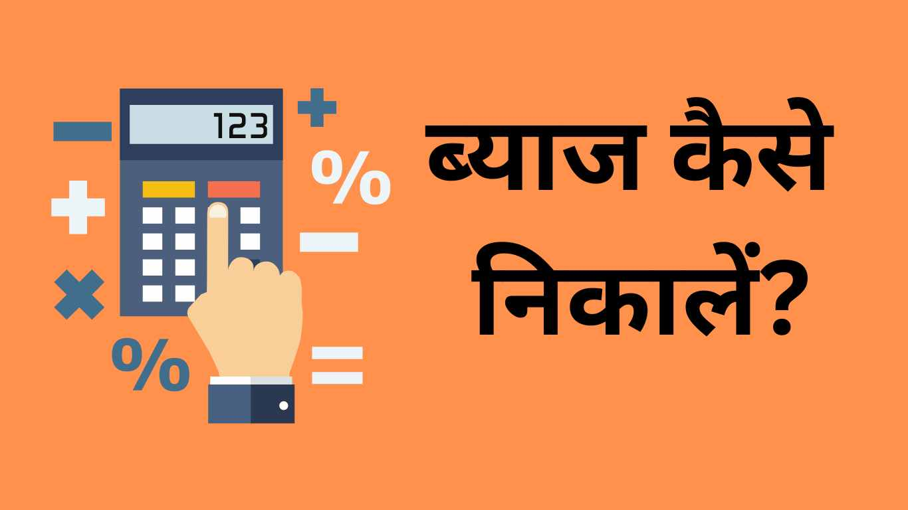
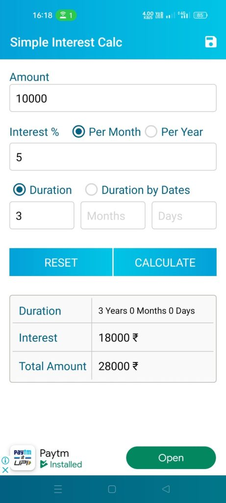
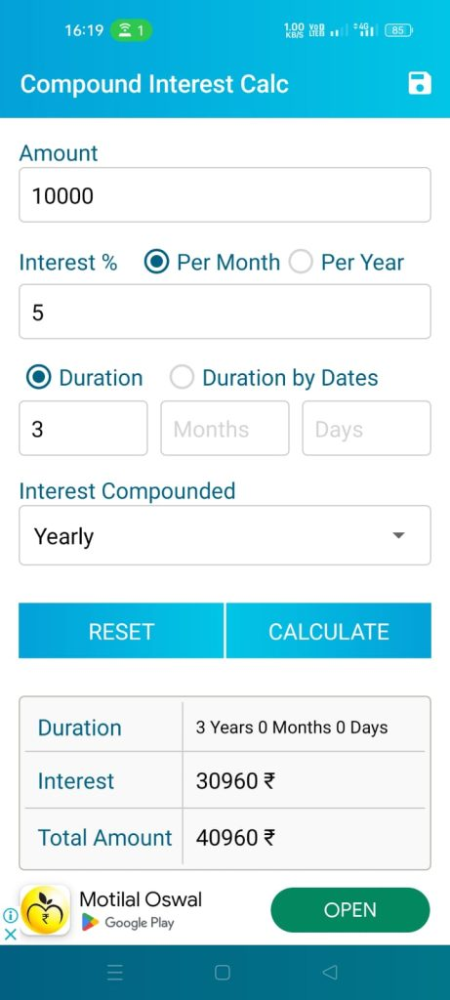

प्रस्तावना
आपने यदि कभी उधार लेने का विचार किया है, तो आपने “ब्याज” के बारे में अवश्य सुना होगा। ब्याज एक महत्वपूर्ण आर्थिक तत्व (economic factor) है जो उधार लेने और देने में एक मुख्य भूमिका निभाता है। इस लेख में, हम आपको बताएंगे कि Byaj Kaise Nikale और इसके प्रकार क्या होते हैं। हम आपको चाक्रवृद्धि ब्याज निकालने और साधारण व्याज निकालने के बारे में भी जानकारी देंगे।
ब्याज क्या होता है (Byaj Kya Hota hai)?
ब्याज एक महत्वपूर्ण आर्थिक तत्व होता है जो ऋण लेने और देने में एक मुख्य भूमिका निभाता है। ब्याज एक प्रकार का आर्थिक मूल्य होता है जिसे लोग ऋण देते या लेते समय उठाते हैं। यह एक आपूर्ति और मांग का ज्ञातांक (supply and demand index) होता है जिसे प्रतिशत (%) के रूप में व्यक्त किया जाता है। ऋणदाता उसके उपयोगकर्ता को ब्याज के रूप में देता है, जो उसके ऋण की मूल्यांकन में शामिल होता है। इस तरह, ब्याज के कारण ऋणदाता को मुनाफ़ा होता है । ब्याज को वार्षिक प्रतिशत, मासिक प्रतिशत, त्रैमासिक प्रतिशत, आदि के रूप में व्यक्त किया जा सकता है।
ब्याज के प्रकार (Byaj ke Prakar)
वाज कड़ी तरह के होते हैं लेकिन इनमें से दो प्रमुख व्याज है जो नीचे दिये गये हैं –
चक्रवृद्धि ब्याज (Chakrvridhi Vyaj)
चक्रवृद्धि ब्याज एक प्रकार का उधार है जिसमें ब्याज की दर समय के साथ बढ़ती रहती है। इसमें ब्याज पूर्णता का ध्यान दिया जाता है, जिसका परिणामस्वरूप लोगों को अधिक वापसी मिलती है। चक्रवृद्धि ब्याज आमतौर पर निवेशों और लंबे समयानुसार आय वृद्धि को बढ़ाने के लिए उपयोग किया जाता है।
आइये एक उदाहरण से समझते है:
मान लीजिए कि एक व्यक्ति ने 50,000 रुपये का निवेश किया है जिसमें चक्रवृद्धि ब्याज दर 8% प्रतिवर्ष है। वर्ष 1 में, उसका निवेश 50,000 रुपये × 8% = 4,000 रुपये के ब्याज के साथ 54,000 रुपये होगा। वर्ष 2 में, निवेश 54,000 रुपये × 8% = 4,320 रुपये के ब्याज के साथ 58,320 रुपये होगा। इसी तरह, इस निवेश के ब्याज का ध्यानपूर्वक बढ़ता जाता है और समय के साथ निवेश की मानदंडी राशि वृद्धि करती रहती है।
साधारण व्याज (Sadharan Vyaj)
साधारण व्याज एक प्रकार का ब्याज है जिसमें ब्याज दर निर्धारित होती है और समय के साथ बदलती नहीं है। यह कर्जदाता और कर्ज लेनें वाला के बीच साझेदारी के रूप में कार्य करता है।
एक उदाहरण के रूप में, यदि कोई व्यक्ति 10,000 रुपये का उधार लेता है और ब्याज दर 10% है, तो उसे प्रतिवर्ष 1,000 रुपये के ब्याज की भुगतान करनी होगी, जो उधार की मूल राशि पर निर्भर करेगी।साधारण व्याज आमतौर पर छोटे अवधियों के कर्जों के लिए उपयोग किया जाता है।
अन्य प्रकार के ब्याज (Any Prakar ke Byaj)
इसके अलावा, अन्य प्रकार के ब्याज भी होते हैं जैसे कि एकीकृत ब्याज, त्रैमासिक ब्याज, मासिक ब्याज, आदि। इन प्रकार का ब्याज विभिन्न आर्थिक संस्थानों द्वारा उपयोग किए जाते हैं।
{kind=link}

इसे भी पढ़ें :-
ब्याज कैसे निकालें (Byaj Kaise Nikale)?
ब्याज निकालने के लिए विभिन्न तरीके होते हैं। यहां हम कुछ प्रमुख तरीकों के बारे में चर्चा करेंगे:
साधारण ब्याज कैसे निकालें (Sadharan Vyaj Kaise Nikale )?
साधारण ब्याज की गणना करने के लिए निम्नलिखित तरीके का उपयोग किया जा सकता है। आइए यहां एक उदाहरण के साथ समझते है:
- मूल राशि (P): ब्याज की गणना के लिए सबसे पहले आपको मूल राशि को निर्धारित करना होगा। उदाहरण के लिए, यदि आपने एक ऋण के लिए 50,000 रुपये का निवेश किया है, तो यह मूल राशि होगी।
- ब्याज दर (R): दूसरा महत्वपूर्ण तत्व ब्याज दर है, जिसे प्रतिशत में व्यक्त किया जाता है। उदाहरण के लिए, यदि ब्याज दर 8% प्रतिवर्ष है, तो ब्याज दर (R) = 8/100 = 0.08 होगी।
- कार्यकारी काल (T): अंतिम तत्व है कार्यकारी काल, जिसमें ऋण की अवधि को निर्धारित किया जाता है। उदाहरण के लिए, यदि ऋण की अवधि 3 वर्ष है, तो कार्यकारी काल (T) = 3 होगी।
इसके अनुसार, साधारण व्याज (SI) की गणना करने के लिए निम्नलिखित सूत्र का उपयोग करें:
Sadharan Byaj ka Formula : SI = (P * R * T)
उदाहरण के लिए, यदि मूल राशि (P) = 50,000 रुपये, ब्याज दर (R) = 0.08, और कार्यकारी काल (T) = 3 वर्ष है, तो साधारण व्याज (SI) = (50,000 * 0.08 * 3) = 12,000 रुपये होगा।
इस उदाहरण के अनुसार, यदि आपने 50,000 रुपये किसी को कर्ज दिया है या कहीं नैवेश किया है और ब्याज दर 8% प्रतिवर्ष है, तो आपको 3 वर्षों में 12,000 रुपये का साधारण व्याज मिलेगा।
चक्रवृद्धि ब्याज कैसे निकालें (Compound Interest Kaise Nikale )?
चक्रवृद्धि ब्याज की गणना करने के लिए निम्नलिखित तरीके का उपयोग किया जाता है। यहां एक उदाहरण के साथ बताया गया है:
- मूल राशि (P): सबसे पहले, आपको चक्रवृद्धि ब्याज की गणना के लिए मूल राशि को निर्धारित करना होगा। उदाहरण के लिए, यदि आप 50,000 रुपये का निवेश करना चाहते हैं, तो यह मूल राशि (P) होगी।
- ब्याज दर (R): दूसरा महत्वपूर्ण तत्व ब्याज दर होती है, जिसे प्रतिशत में व्यक्त किया जाता है। उदाहरण के लिए, यदि ब्याज दर 10% है, तो ब्याज दर (R) = 10/100 = 0.10 होगी।
- कार्यकारी काल (T): अंतिम तत्व है कार्यकारी काल, जिसमें आपको निवेश की अवधि को निर्धारित करना होगा। उदाहरण के लिए, यदि आप 3 वर्षों के लिए निवेश करना चाहते हैं, तो कार्यकारी काल (T) = 3 होगी।
इस प्रश्न के अनुसार, चक्रवृद्धि ब्याज (CI) की गणना के लिए निम्नलिखित सूत्र का उपयोग करना होगा:
Chakravridhi Byaj ka Formula : CI = P * (1 + R)^T – P
उदाहरण के लिए, यदि मूल राशि (P) = 50,000 रुपये, ब्याज दर (R) = 0.10 (10% के बराबर), और कार्यकारी काल (T) = 3 वर्ष है, तो चक्रवृद्धि ब्याज (CI) = 50,000 * (1 + 0.10)^3 – 50,000 होगा।
इस उदाहरण के अनुसार, यदि आप 50,000 रुपये का निवेश करते हैं और ब्याज दर 10% है, तो आपको 3 वर्षों में चक्रवृद्धि ब्याज (CI) = 50,000 * (1 + 0.10)^3 – 50,000 = 16,500 रुपये होगा।
इस उदाहरण से आप देख सकते हैं कि चक्रवृद्धि ब्याज के प्रभाव में निवेश की मूल्यांकन में वृद्धि होती है और समय के साथ ब्याज की भुगतान बढ़ती रहती है।
ब्याज कैलकुलेटर का उपयोग काके ब्याज कैसे निकालें ?
आप ब्याज को निकालने के लिए ब्याज कैलकुलेटर का भी उपयोग कर सकते हैं। यह आपको उधार की अवधि, ब्याज दर, और मूल धन के आधार पर ब्याज की गणना करने में मदद करेगा।
ब्याज कैलकुलेटर का उपयोग करके ब्याज की गणना करने के लिए निम्नलिखित चरणों का पालन करें:
{kind=link}

- सबसे पहले, एक ब्याज कैलकुलेटर डाउनलोड करें और इंस्टॉल करें। आप अपने स्मार्टफोन या कंप्यूटर के लिए ब्याज कैलकुलेटर ऐप्स या वेबसाइट्स का उपयोग कर सकते हैं।- Download Interest Calculator
- कैलकुलेटर खोलें और आवश्यक विवरण दर्ज करें। आपको मूल राशि (प्रिंसिपल), ब्याज दर (आर), कार्यकारी काल (टी) और संग्रह अवधि (यदि लागू) दर्ज करनी होगी।
- सभी विवरण भरने के बाद, ” कैलकुलेट” बटन दबाएं।
- कैलकुलेटर आपको ब्याज की गणना करके दे देगा । यह आपको ब्याज की राशि, कुल राशि (मूल राशि + ब्याज), और ब्याज की भुगतान की समय सीमा (मास, वर्ष, आदि) बताएगा ।
{kind=link}

ब्याज के महत्वपूर्ण तत्व
ब्याज की गणना करते समय कुछ महत्वपूर्ण तत्वों का ध्यान देना आवश्यक होता है। यहां हम उन तत्वों के बारे में विस्तार से बात करेंगे:
मूलधन
मूलधन एक कर्ज लेनें वाले के द्वारा जमा किए जाने वाले प्राथमिक राशि होती है। यह उधार की मूल राशि होती है जिस पर ब्याज की गणना होती है।
ब्याज दर
ब्याज दर प्रतिशत (%) के रूप में होती है जो ब्याज की मात्रा निर्धारित करती है। कर्ज लौटने के समय मूलधन के अलावे कितना ज़्यादा राशी चुकाना है ये ब्याज दर से ही पता चलता है ।
कार्यकारी काल
कार्यकारी काल वह अवधि होती है जिसमें ब्याज दर और मूलधन पर ब्याज की गणना होती है। कहने का मतलब जीतने समय के लिए निवेश या कर्ज किसी को दिया जाता है उतने समय में ही ब्याज की गणना होती है ।
ब्याज के लाभ और हानियाँ
ब्याज के लाभ
- ब्याज के माध्यम से आप एक घर ख़रीद सकते हैं ।
- उच्च शिक्षा के लिए अगर आपके पास पैसे नहीं तो आप ब्याज पर उधर ले सकते हैं ।
- व्यापार विस्तार के लिए उधार लिया जा सकता है ।
ब्याज की हानि
- उधार के मूल राशि में वृद्धि की तुलना में ब्याज की भुगतान बढ़ जाती है।
- ब्याज दरों में बदलाव निवेशकों के लिए आर्थिक स्थिरता को प्रभावित कर सकता है।
ब्याज के संबंध में अक्सर पूछे जाने वाले प्रश्न (FAQs)
ब्याज का मतलब क्या होता है?
ब्याज एक महत्वपूर्ण आर्थिक तत्व है जो उधार लेने और देने में उठाया जाता है। यह एक प्रतिशत के रूप में व्यक्त किया जाता है।
ब्याज कैसे निकाला जाता है?
ब्याज को गणना करने के लिए विभिन्न तरीके हैं जैसे कि ब्याज गणना, ब्याज कैलकुलेटर का उपयोग, आदि।
चक्रवृद्धि ब्याज क्या होता है?
चक्रवृद्धि ब्याज एक प्रकार का उधार है जिसमें ब्याज की दर समय के साथ बढ़ती रहती है। इसे आमतौर पर निवेशों और लंबे समयानुसार आय वृद्धि को बढ़ाने के लिए उपयोग किया जाता है।
साधारण व्याज क्या होता है?
साधारण व्याज एक प्रकार का ब्याज है जिसमें ब्याज दर निर्धारित होती है और समय के साथ बदलती नहीं होती है। इसे छोटे अवधियों के कर्जों के लिए उपयोग किया जाता है।
ब्याज के क्या लाभ होते हैं?
ब्याज के कुछ लाभ हैं जैसे कि आवास और शिक्षा के लिए उधार की सुविधा, व्यापार विस्तार के लिए उधार उपलब्ध कराने की सुविधा, आदि।
इस लेख के माध्यम से हमने ब्याज के बारे में आपको विस्तार से जानकारी प्रदान की है। ब्याज एक महत्वपूर्ण आर्थिक तत्व है जिसे समझने के बाद आप ख़ुद से अपने वित्तीय निर्णय ले सकते हैं। इसलिए, अपने उधार के लिए सही ब्याज दर की गणना करने से पहले, सम्पूर्ण जानकारी हासिल करें और आवश्यकताओं के अनुसार सही निर्णय लें।